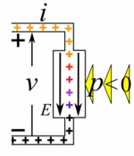

What needs to happen?
Need to answer: Theory: What is it? How does it work? Practice: Homework problems Possible permutations
Circuits 1 Outline
Units and Scales
TODO: Dimensional Analysis
International System of Units (SI)
def: seven basic units upon which all others are based
Units
| Base Quantity | Name | Symbol |
|---|---|---|
| length | meter | m |
| mass | kilogram | kg |
| time | second | s |
| electric current | ampere | A |
| thermodynamic temperature | kelvin | k |
| amount of substance | mole | mol |
| luminous intensity | candela | cd |
Prefixes
| Factor | Name | Symbol |
|---|---|---|
| femto | f | 10^-15 |
| pico | p | 10^-12 |
| nano | n | 10^-9 |
| micro | μ | 10^-6 |
| milli | m | 10^-3 |
| centi | c | 10^-2 |
| kilo | k | 10^3 |
| mega | M | 10^6 |
| giga | G | 10^9 |
| tera | T | 10^12 |
Charge, Current, Voltage, Power
TODO: Nomenclature Disambiguation
- Describe the difference between unit, dimension, and symbol in terms of dimensional analysis.
Charge
def: A physical property of matter that causes it to experience a force when placed in an electromagnetic field.
unit: Coulombs dimension: C symbol: Q or q
One Coulomb is the magnitude of charge of $ 6.242*10^18 * electrons or protons.
$$ 1C = 1A*s = 1F*V $$
Current
def: The flow of electrical charge (understood as the movement of electrons).
unit: Ampere dimension: A symbol: I or i
$$ 1A = 1C / s $$ (as above)
NOTE: *amp-hours* is another way to write the amount of charge a battery has. Just do a little algebra and see.
Voltage
def: the electric potential energy between two points per unit electric charge.
unit: Volt dimension: V symbol: V or v
$$ V = \frac{ N * M}{C} = \frac{ kg * m^2 }{ A *s^3 } $$
Power
def: Literally power is change in energy over change in time, in this instance it is the rate at which electrical energy is transferred by a circuit.
unit: Watts dimension: W symbol: P
$$ P = V * I = \frac{V^2}{R} = I^2 * R $$
Peak Power: the rate of energy flow a) at its peak, or b) over the time of discharge (ex, a PWM signal).
TODO: Resistance
Passive Sign Convention
def: an arbitrary and universally accepted method of labeling potential and current in an electrical circuit.
Reference Directions For Current, Voltage, and Power
The reference directions are given for a passive device that is assumed to be ‘consuming’ or ‘dissipating’ power. In this instance $p=v*i$ and $r=v/i$. For those signs, current flows from the positive terminal of the device to the negative terminal and potential is higher on the positive side.
For a device that is a load charge moves through an e-field gradient from a higher energy state, positive, to a lower energy state, negative.

For a device that is a ‘source’ the charge is forced in the opposite direction, against the e-field gradient. The signs in this case are opposite: $p=-v*i$ and $r=-v/i$.
| Source | Power | Resistance |
|---|---|---|
| load | p > 0 | r > 0 |
| source | p < 0 | r < 0 |
Ohm’s Law
$$ V = I * R $$
Sources, Nodes, Paths, Loops, and Branches
Sources
These sources are considered “ideal” and are labeled as such. More realistic representations will follow.
Independent Voltage Source
Independent Current Source
Dependent Voltage Source
Dependent Current Source
Voltage Controlled Voltage Source
Voltage Controlled Current Source
Current Controlled Current Source
Current Controlled Voltage Source
Branches
def: any single element withing a circuit
- add some examples from homeworks…
Nodes
def: Nodes connect branches (elements) together.
- add some examples from homeworks…
Paths
def: any combination of elements, nodes, and branches
- add some examples from homeworks…
Loops
def: any closed path in a circuit
- add some examples from homeworks…
Kirchoff’s Laws
Kirchoff’s Voltage Law
Kirchoff’s Current Law
Series and Parallel
Resistors in Parallel
Resistors in Series
Sources in Series
Sources in Parallel
Voltage and Current Division
Nodal Voltage Analysis
Mesh Current Analysis
Linearity and Superposition
Source Transformations
Equivalent Circuits
Thevenin Equivalent
Norton Equivalents
Operational Amplifiers
Ideal Op-Amps
Non-Ideal Op-Amps
Inverting Amplifier
Non-Inverting Amplifier
Voltage Follower (Buffer)
Summing Amplifier
Difference Amplifier
Common Mode Rejection
Input Offset Voltage
Slew Rate
Capacitors
- symbol
- current > voltage relationship
- integral voltage > current relationship
- energy storage
- in series and parallel
- characteristics of an ideal capacitor
Inductors
- symbol
- voltage > current relationship
- integral current-voltage relationship
- energy storage
- in series and parallel
- characteristics of an ideal inductor